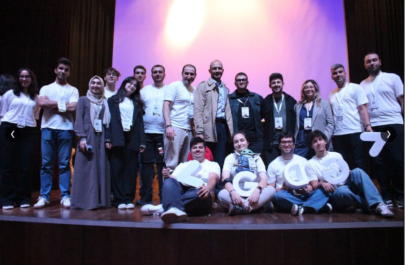
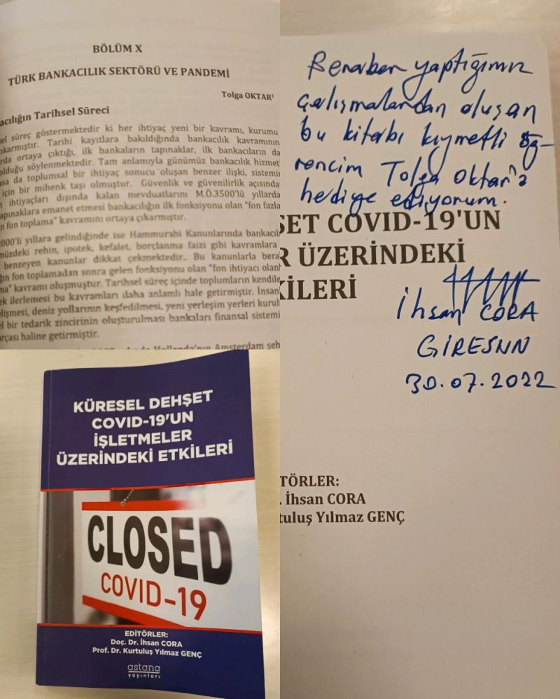

İş Yatırım
Yatırım Danışmanı · MBA
FİNANS · TEKNOLOJİ · TOPLULUK
Öğrenmek. Üretmek.
Birlikte gelişmek.
Finans dünyasında bir profesyonel, topluluklarda bir gönüllü. Bilginin paylaştıkça çoğaldığına inanan bir yolculuk.
Yolculuğumu keşfet 01—06Bankacılıktan finansal okuryazarlığa,
bir sınıftan teknoloji topluluklarına.
01 / KARİYERİM
Üniversite yıllarında başlayan girişimcilik ve yazarlık deneyimlerinden, bankacılık ve yatırım danışmanlığına.
Yatırım Danışmanı · MBA
02 / GÖNÜLLÜ ÇALIŞMALARIM
Finansal okuryazarlığı yaygınlaştırmak, çocukları kodlamayla tanıştırmak ve teknoloji etrafında insanları buluşturmak.

KASIM 2023’TEN İTİBAREN
Organizatör olarak teknoloji topluluğuna katkı. DevFest buluşmaları, GDG Summit MENAT 2025 ve Google Dubai’den anılar.
03 / EĞİTİMLERİM
Bir öğrenci olarak başlayan yolculuk, eğitmenlik ve deneyim paylaşımıyla devam ediyor.
Giresun Üniversitesi, Görele Uygulamalı Bilimler Yüksekokulu
Giresun Üniversitesi, Sosyal Bilimler Enstitüsü. Yüksek lisans ve araştırma odağı: bankacılık, pandemi ve kriz yönetimi.
Trabzon Mehmet Akif Ersoy İlköğretim Okulu ve Trabzon Anadolu Teknik Lisesi.
Teknik analizin temellerini, yatırımcı davranışlarıyla birlikte ele alan Türkçe eğitim.
04 / AKADEMİK ÇALIŞMALARIM
Bankacılık, kriz dönemleri ve finansal davranışlar üzerine çalışmalar.

“Küresel Dehşet COVID-19’un İşletmeler Üzerindeki Etkileri” kitabının X. bölümünde bankacılık sektörü ve pandemi üzerine bir çalışma.
Bankacılık mesleğine üniversite yıllarından bir bakış.
“Pandemi Krizi ve İşletmelerin Krizi Fırsata Çevirebilme Çalışmaları, Yeni ve Eski Meslekler Konusunda Bir Araştırma.”
Yazar biyografisinde tez çalışması olarak belirtilmiştir.
05 / SAHİP OLDUĞUM LİSANSLAR
Finans ve sigortacılık alanındaki mesleki belgelerim; eğitim ve gelişim sertifikalarım.
06 / HAYAT MOTTOM
Çaresizseniz,
çare [siz]siniz!
“Hayatımdaki zorlukları hep bir fırsat olarak gördüm.”
Tolga Oktar